- Deep L-layer neural network
- Forward Propagation in a Deep Network
- Getting your matrix dimensions right
- Why deep representations?
- Building blocks of deep neural networks
- Forward and Backward Propagation
- Parameters vs Hyperparameters
- What does this have to do with the brain?
- assignment: implementing a L-layer NN
Deep L-layer neural network
Layer counting:
- input layer is not counted as a layer, "layer 0"
- last layer (layer L, output layer) is counted.
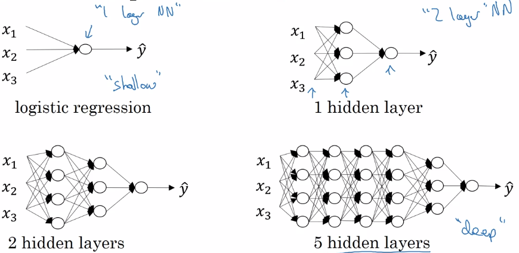
notation:
layer 0 = input layer
L = number of layers
n^[l] = size of layer l
a^[l] = activation of layer l = g[l]( z[l] ) → a[L] = yhat, a[0] = x
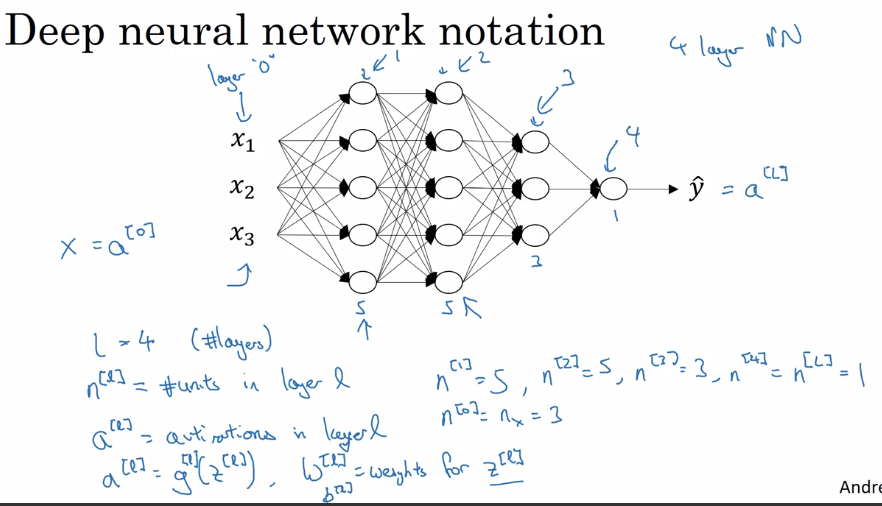
Forward Propagation in a Deep Network
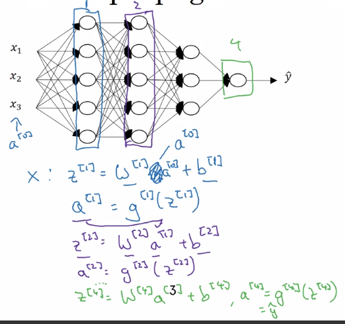
⇒ general rule:
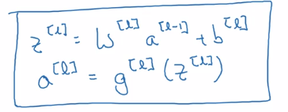
vectorization over all training examples:
Z = [z(1),...,z(m)] one column per example ⇒
A[0] = X
for l = 1..L:
Z[l] = W[l]A[l-1] + b[l]
A[l] = g[l]( Z[l] )
Yhat = A[L]
Getting your matrix dimensions right
Debug: walk through matrix dimensions of NN, W[l].
Single training example dimension:
a[l-1].shape = (n[l-1], 1)
z[l].shape = (n[l], 1)
⇒ z[l] = W[l] * a[l-1] + b[l], shape = (n[l],1)
⇒ W[l].shape = (n[l], n[l-1]), b[l].shape = (n[l],1)
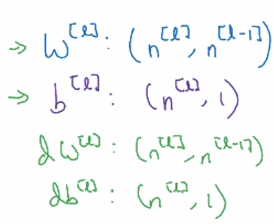
Vectorized (m examples) dimension:
Z = [z(1),...,z(m)] stacking columns.
Z[l].shape = (n[l], m)
Z[l] = W[l] * A[l-1] + b[l]
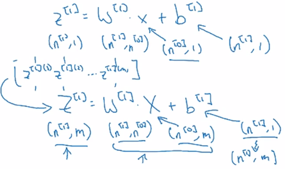
Z[l].shape = A[l].shape = (n[l], m)
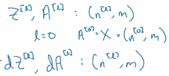
Why deep representations?
intuition:
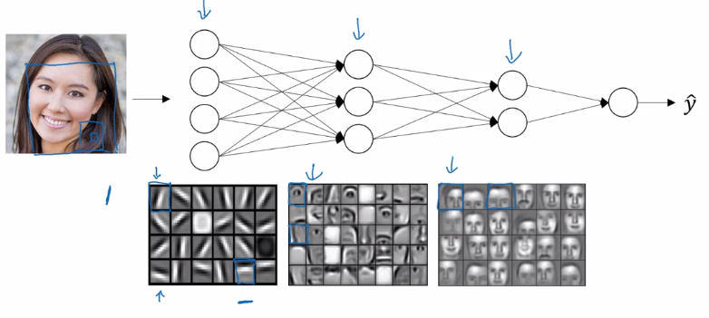
as layers grow: simple to complex representation / low to high level of abstraction.
Circuit theory: small deep NN is better than big shallow NN.
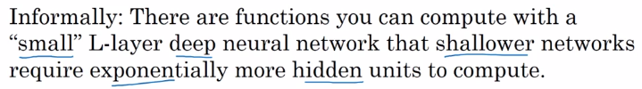
Example: representation of a XOR.join(x1..xn) function.
- Using deep NN ⇒ build an XOR binary tree
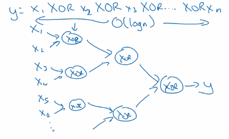
- Using shallow NN: one single layer → enumerate all 2^n configurations of inputs.
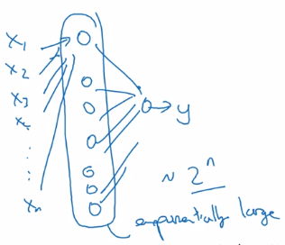
Building blocks of deep neural networks
Fwdprop and backprop, for layer l.
- Fwdprop: from a[l-1] to a[l]
note: cache z[l] for backprop.
- Backprop: from da[l] to da[l-1], dw[l] and db[l]
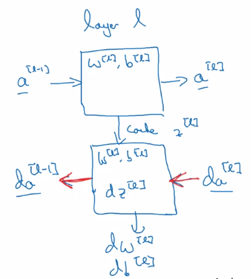
Once the fwd and back functions are implemented, put layers together:
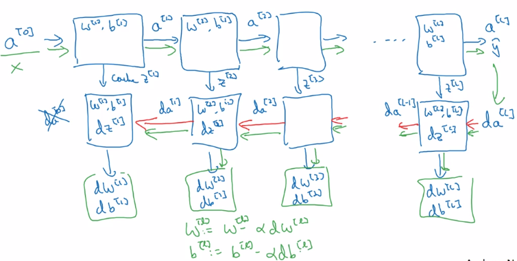
Forward and Backward Propagation
Fwd prop
input = a[l-1], output = a[l], cache = z[l]
Z[l] = W[l] * A[l-1] + b[l]
Z[l] = g[l]( Z[l] )
Back prop
input = da[l], output = da[l-1], dW[1], db[l]
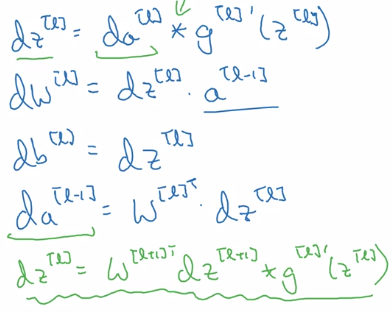
note:
- remember
da = dL/da, so hereda~='1/da' mathematically. - derivate of matrix multiplication = transposed matrix derivative: (A*B)' = B^T' * A^T'
- initial paule of backprop: da[L] = dL/dyhat
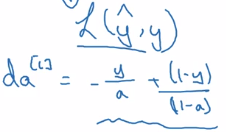
Vectorized version:
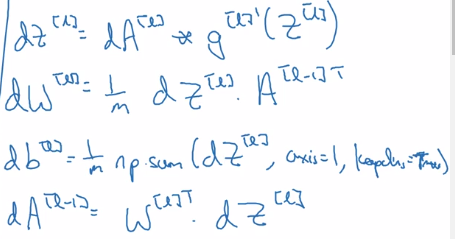
Parameters vs Hyperparameters
- parameters: W[l] and b[l] → trained from data
- hyperparams:
- alpha (learning_rate), number of iterations, L, n[l] size of each layer, g[l] at each layer...
- momentum, minibatch, regularization...
→ finally decides what params will be.
empirical: try out different hyperparams.
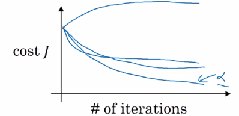
What does this have to do with the brain?
logistic regression unit ~~~> neuron in brain
assignment: implementing a L-layer NN
- params initialization:
note: different signature for np.random.randn and np.zeros:
W = np.random.randn(d0, d1) * 0.01
b = np.zeros((d0, d1)) # Needs putting dims in a tuple!
- function activation:
np.maximum is element-wise comparison, whereas np.max will apply on certain axis.
so ReLU(x) = np.maximum(0, x)
- Fwd prop:
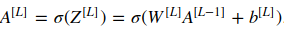
- cost:
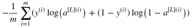
- backprop formula:
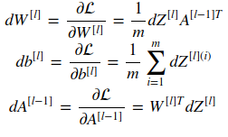
- initial paulse of backprop dA[L]:
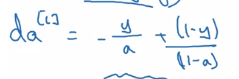
dAL = - (np.divide(Y, AL) - np.divide(1 - Y, 1 - AL))
Part 4 of series «Andrew Ng Deep Learning MOOC»：
- [Neural Networks and Deep Learning] week1. Introduction to deep learning
- [Neural Networks and Deep Learning] week2. Neural Networks Basics
- [Neural Networks and Deep Learning] week3. Shallow Neural Network
- [Neural Networks and Deep Learning] week4. Deep Neural Network
- [Improving Deep Neural Networks] week1. Practical aspects of Deep Learning
- [Improving Deep Neural Networks] week2. Optimization algorithms
- [Improving Deep Neural Networks] week3. Hyperparameter tuning, Batch Normalization and Programming Frameworks
- [Structuring Machine Learning Projects] week1. ML Strategy (1)
- [Structuring Machine Learning Projects] week2. ML Strategy (2)
- [Convolutional Neural Networks] week1. Foundations of Convolutional Neural Networks
- [Convolutional Neural Networks] week2. Deep convolutional models: case studies
- [Convolutional Neural Networks] week3. Object detection
- [Convolutional Neural Networks] week4. Special applications: Face recognition & Neural style transfer
- [Sequential Models] week1. Recurrent Neural Networks
- [Sequential Models] week2. Natural Language Processing & Word Embeddings
- [Sequential Models] week3. Sequence models & Attention mechanism
Disqus 留言